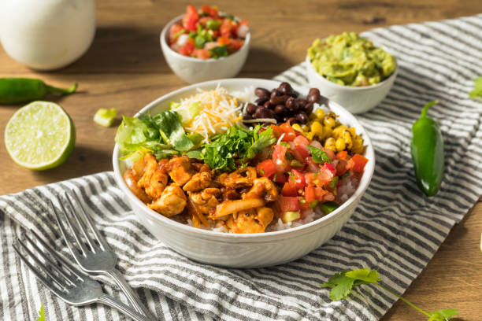

Burrito Bowl

Description
Burrito bowls are a very popular go to dish. The dish is packed with flavor, is easy to make,
and very nutritious. Suitable for on the go or for a good weeknight meal.
Ingredients
- 2 skinless, boneless chicken breasts
- 1/2 tsp garlic powder
- Salt and ground black pepper to taste
- 1 can white corn kernels, drained
- 1 can black beans, drained
- 1.5 cups log grain white rice
- 3/4 cup chopped lettuce
- 1/2 cup sour cream
- 1/2 cup shredded Monterey Jack cheese
- 1/3 (8 oz) jar salsa
Directions
- Preheat outdoor gril for medium heat and lightly oil the grate.
- Season chicken breasts with garlic powder, salt and black pepper.
- Cook chicken on the grill until no longer pink in the center and thoroughly cooked, about 6 minutes per side.
Cut into strips or bite-sized pieces.
- Heat corn and blackbeans in separate pans over medium-low heat for about 5 minutes.
- Layer cooked rice, corn, black beans, and chicken on two serving plates.
Top with lettuce, sour cream, monterey jack cheese and salsa.
Back to Home Page